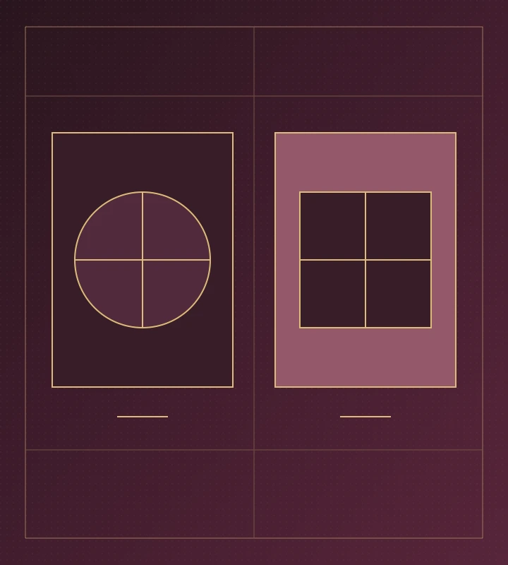

~HERO_EYEBROW~
~HERO_TITLE~
~HERO_DESCRIPTION~
邀请码
~INVITE_CODE~~BENEFIT_RATE~~BENEFIT_DISCLAIMER~
~HOME_FEATURED_LABEL~~A1_TITLE~~HOME_LATEST_LABEL~查看全部
~RAIL_EYEBROW~
~RAIL_TITLE~
- 01~RAIL_1_TITLE~~RAIL_1_TEXT~
- 02~RAIL_2_TITLE~~RAIL_2_TEXT~
- 03~RAIL_3_TITLE~~RAIL_3_TEXT~
- 04~RAIL_4_TITLE~~RAIL_4_TEXT~
~RAIL_QUOTE~打开观察笔记
COLLECTIONS